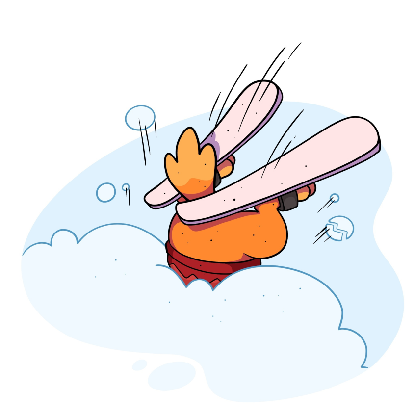

<!--#set var="title" value="glksok" -->
<!--#set var="footer-class" value="footer-gradient-transition" -->
<!--#include virtual="/parts/head.html" -->
<div class="page bg-white">
	<!--#include virtual="/parts/header-main.html" -->
	<!--#include virtual="/parts/eventSignUp.html" -->
	<!--#include virtual="/parts/AlertCookie.html" -->

	<main>
		<section class="section not-found">
			<div class="container">
				
				<h1 class="not-found-title">
					Такой страницы нет
				</h1>
				<p class="not-found-text">
					Возможно, мы ее удалили 🤷‍♂️.
					<br>
					По работе сайта, приложений и личного кабинета пишите на <a href="mailto:lk@glksok.ru" class="btn btn-link not-found-mail">lk@glksok.ru</a>
				</p>
				<a href="index.html" class="btn btn-secondary not-found-button">
					На главную
				</a>
			</div>
		</section>
	</main>
	<!--#include virtual="/parts/footer-main.html" -->
</div>
<!--#include virtual="/parts/scripts.html" -->
